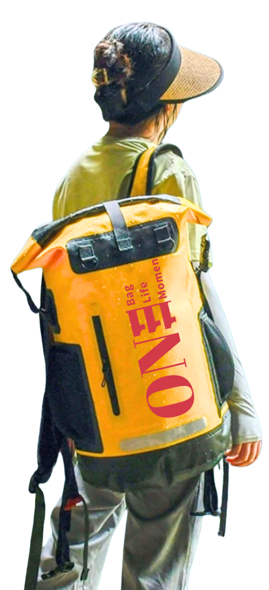

About 111
111 is a public benefit corporation dedicated to enhancing the safety and resilience of everyday people in the face of emergencies such as earthquakes, hurricanes, floods, fires, tsunami, and conflict zones. Our mission is to provide meticulously curated backpacks filled with essential emergency response equipment ensuring that families and individuals have the tools needed to navigate and survive life‑threatening situations.
By combining innovation with commitment to public welfare, 111 strives to make preparedness accessible to everyone.

Social Impact
At 111, we believe in a world where everyone deserves safety and information, especially in the most vulnerable times. A portion of our proceeds supports emergency relief and humanitarian aid through trusted partners.
LEARN MORE